Clueso, before and after
Each section puts a screen from Clueso's live app next to the redesign prototype. On the left, what's wrong, highlighted, and the principle it breaks. On the right, what changed and why.
- 18 screens
- 38 issues
- 54 design decisions
- Free plan, observed 15–17 Oct 2026
How to read it. Numbers on a screenshot match the numbered notes under it. Click any screenshot to open it full size.
Basis names the principle, law or research behind an issue. Why names what a decision rests on: Clueso's own pricing, help center or app ("Clueso"), something observed during the audit, or cited research. Nothing is assumed.
Sign-in page
The form works, but keyboard order and an auto-scrolling wall get in the way of a 10-second task.
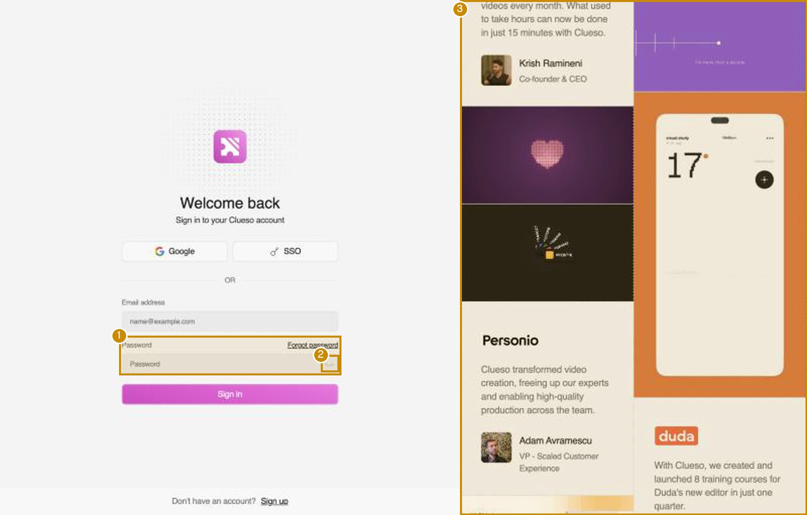
- 1Forgot password link interrupts the keyboard path Minor
The link sits between the Password label and its field, so Tab goes email, Forgot password, password. Neither input has a label element, a name or an autocomplete value, so screen readers announce only the placeholder and password managers have less to go on.
BasisAccessibility, error prevention
- 3Auto-scrolling wall competes with the task Minor
The right half scrolls testimonials and showcase videos, including tiles titled "Meet Claude Cowork" and "How to create playlists in Spotify", which read as other companies' products. Every quote is duplicated in the markup, so assistive tech reads it twice. Errors rely only on the browser's native bubbles.
BasisAesthetic and minimalist design
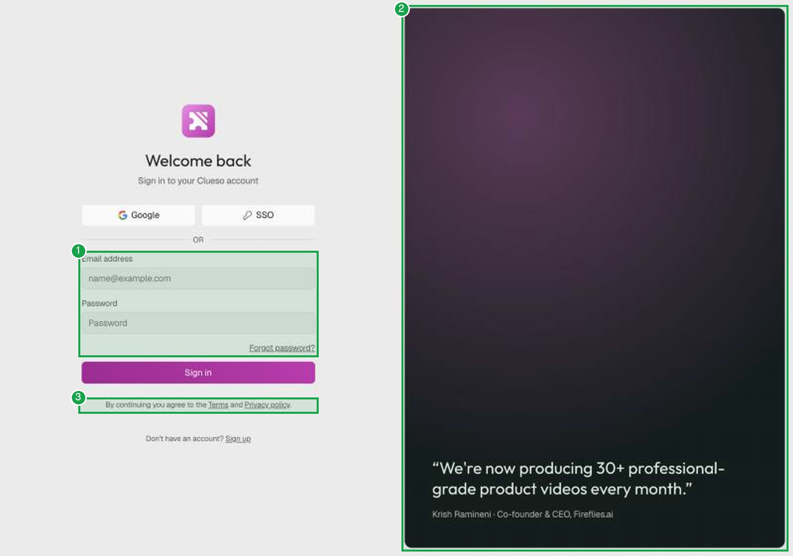
- 1Visible labels tied to each input, and Forgot password moved below the field, so Tab goes email → password → Sign in.
WhyWCAG 1.3.1 (info and relationships) and 2.4.3 (focus order).
- 2One static customer quote replaces the moving wall of testimonials and unrelated showcase tiles.
WhyCognitive load (Laws of UX): motion beside a form competes for attention while the user is typing.
- 3A one-line terms and privacy notice under the button.
WhyNielsen #10, help and documentation: consent is stated where it happens.
Setup questions
Clueso asks for a name Google already gave, then role and workspace, across 4 screens before Home.
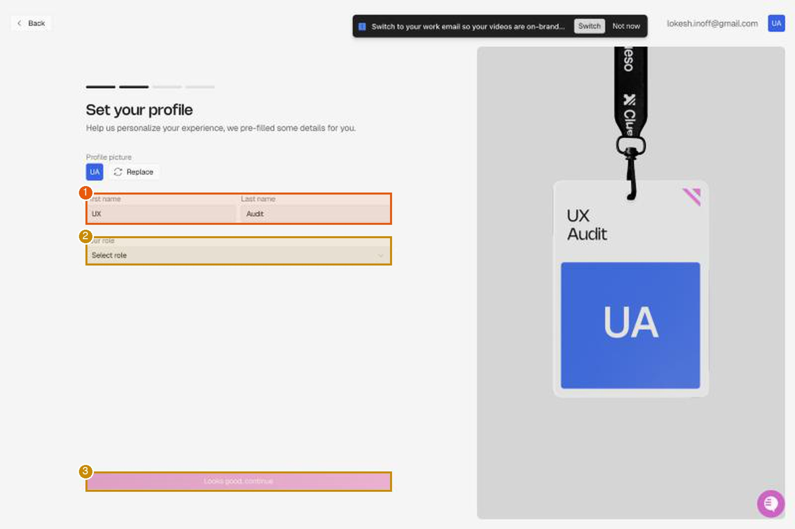
- 1Second request for the user's name in under a minute Major
First and last name again, prefilled this time from the previous screen.
BasisConsistency
- 2Role list is long and unordered Minor
13 roles in no clear order, with mixed naming ("Customer education & training" next to "Learning and development", plus jargon like "CXO").
BasisMatch with the real world
- 3"Looks good, continue" is disabled with no reason given Minor
The button reads as ready but does nothing until a role is picked.
BasisError prevention
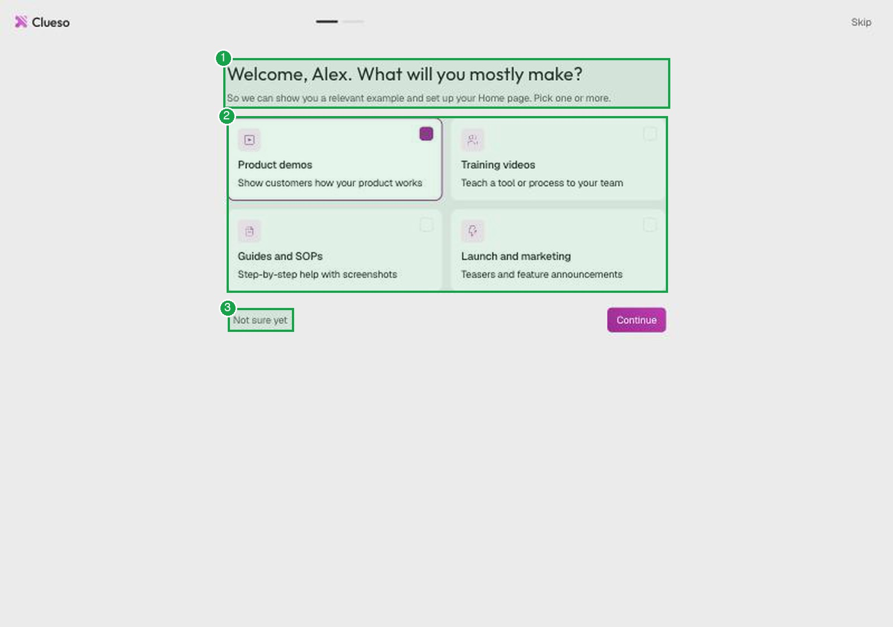
- 1One screen, one question, and the reason is written under it: "so we can show you a relevant example and set up your Home page".
WhyNN/g onboarding: skip what you can and explain why you ask. Canva asks one question (Userpilot).
- 2Four jobs in Clueso's own terms. The answer changes the next screen and the Home page, so answering visibly pays off.
WhyUserpilot welcome surveys: ask only what changes the experience. Hick's law: 4 options instead of 13 roles.
- 3"Not sure yet" and Skip are always there. Name, role and workspace are never asked; the name comes from Google.
WhyNielsen #3, user control and freedom. NN/g forms: derive data instead of asking for it.
The end of onboarding
The recommended option ends in an install wall, at the moment motivation is highest.
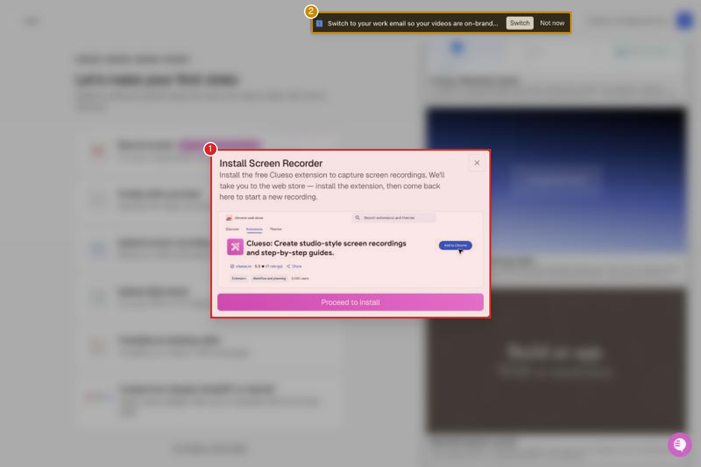
- 1Install wall at the moment of first value Critical
"Install the free Clueso extension... then come back here" breaks the session at the riskiest point of activation.
BasisTime to value
The recommended path is a dead end inside the product. "Record screen, RECOMMENDED FOR YOU" opens an install modal (next figure) that sends the user to the Chrome Web Store at the final onboarding step. Basis: Time to value
Six choices, two of them irrelevant to a new user. "Translate an existing video" needs a video the user doesn't have yet. "Create from Claude, ChatGPT, or Gemini" is a developer integration. Basis: Hick's law
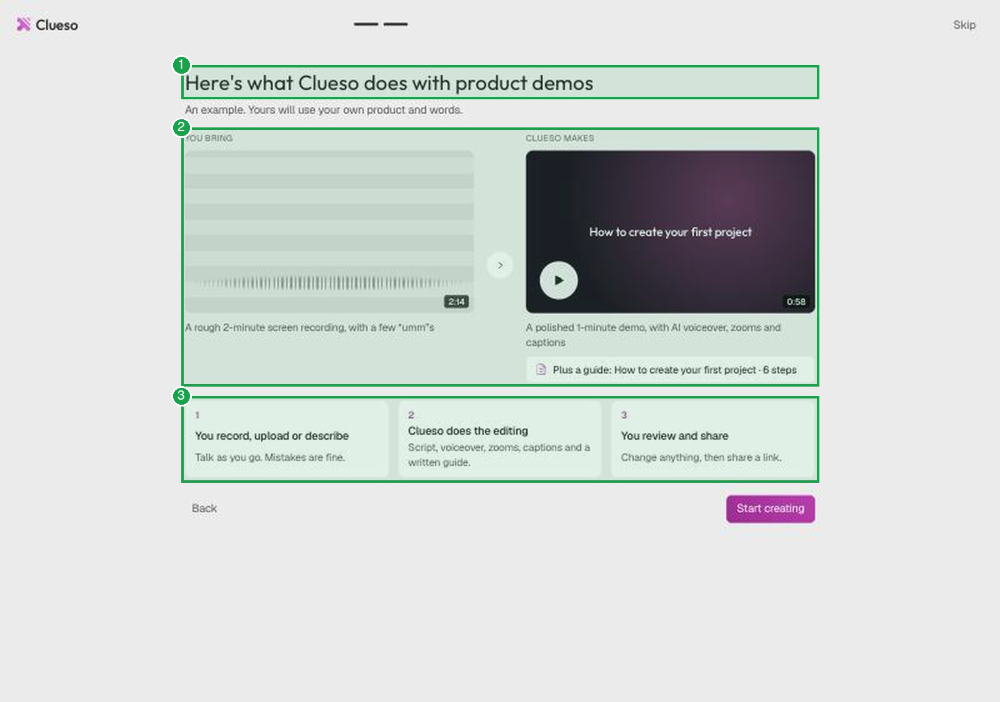
- 1Show, don't ask: the last onboarding screen shows what Clueso does for the job you picked. Nothing is built, spent, installed or waited for.
WhyFogg behavior model (B = MAP): keep ability high while motivation peaks. HAX G1: make clear what the system can do.
- 2A before-and-after of a rough recording becoming a polished video, plus the written guide, because that pair is Clueso's core promise.
WhyClueso homepage: "Your video is ready. So is your documentation."
- 3How it works in three plain steps, so nothing later is a surprise. Then "Start creating" goes to a Home page already set up for that job.
WhyGoogle PAIR, mental models: set expectations early. Downhill onboarding: every step should be easier than the last.
Home
Seven things compete for attention on the first view, and the prompt carries controls a new user can't judge.

- 1A model picker for people making videos Major
The default is Opus 5.5. The menu (next figure but one) lists six LLMs with vendor taglines and no cost, speed or quality guidance.
BasisMatch with the real world
- 2Brand kit is on by default, and it is made up Critical
The brand kit chip is on by default. For a gmail.com sign-up, the kit was built from gmail.com: a placeholder pink logo and a pink accent (next figure). The AI added "Use our brand kit." to my prompt and planned the video in "brand pink (#D43F8C)".
BasisError prevention
- 3Survey interrupts the first session Major
"How did you hear about us?" pops up within seconds and covers the Translate button.
BasisUser control and freedom
- 4Get-started checklist is hidden and loosely defined Major
It sits collapsed near the bottom of the sidebar under a promo card. Install screen recorder comes after Export a video. Make your first video was ticked by a blank 6-second project.
BasisVisibility of system status
- 5One plan, three names Major
The sidebar says "Free trial", the upgrade card says "You are on the free plan", and Billing says "Free". A trial implies an end date; this plan has none.
BasisConsistency
- 6Seven things asking for attention Minor
Series A sale banner, What's new card, checklist, upgrade card, survey, work-email toast and a floating chat bubble, all on the first view.
BasisAesthetic and minimalist design
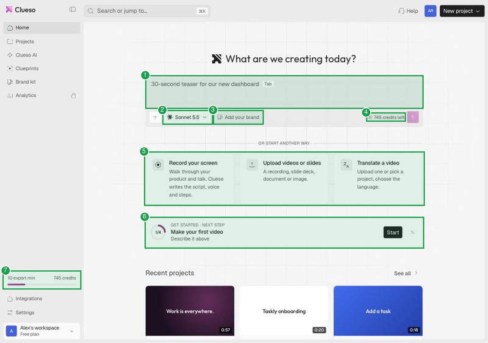
- 1A suggestion sits in the empty prompt with a Tab key to accept it, built from the onboarding answer. It uses Clueso's own pattern and animation.
WhyRecognition over recall (Nielsen #6). Clueso's own RotatingPlaceholder, measured in the live app.
- 2Clueso's nine models stay, grouped by vendor, and the pill shows the one in use. Every estimate follows the chosen model.
WhyUser control and freedom (Nielsen #3). Clueso's help center: a smaller model costs about half per message.
- 3Brand stays off until you set one up, so the AI never invents a brand kit from gmail.com.
WhyError prevention (Nielsen #5).
- 4Credits left, and the estimate once you type, sit next to Send.
WhyHAX G4 and Shape of AI cost estimates: show the cost before the action.
- 5Clueso's own start options, each with one line on what it does: record, upload videos or slides, translate.
WhyClueso Home's "Or start directly". Hick's law for merging its two upload buttons into one.
- 6One next step with progress, replacing a 6-item checklist hidden under a promo card.
WhyGoal-gradient effect and endowed progress (Nunes and Drèze, 2006): showing 1 of 4 done raises completion.
- 7One compact usage line instead of a two-meter card and an upgrade ad. No sale banner, survey or chat bubble. What's new moves into Help, which stays in the top bar where Clueso has it.
WhyAesthetic and minimalist design (Nielsen #8). ProductLed: no pricing before value.
Before the build
The default model is the most expensive one, and nothing says what the video will cost.

- 1The most expensive model is the default, and the menu shows no costs Major
Opus 5.5, Sonnet 5.5, Astra 6, Sol 6.1, Luna 6 and Terra 5.6, each described by vendor ("Anthropic's most capable model"). The help docs say a smaller model costs about half per message, but this menu doesn't say so.
BasisMatch with the real world
"Use our brand kit." was added to my prompt. My message gained a line I didn't write, which applied the gmail.com brand kit. Basis: User control and freedom
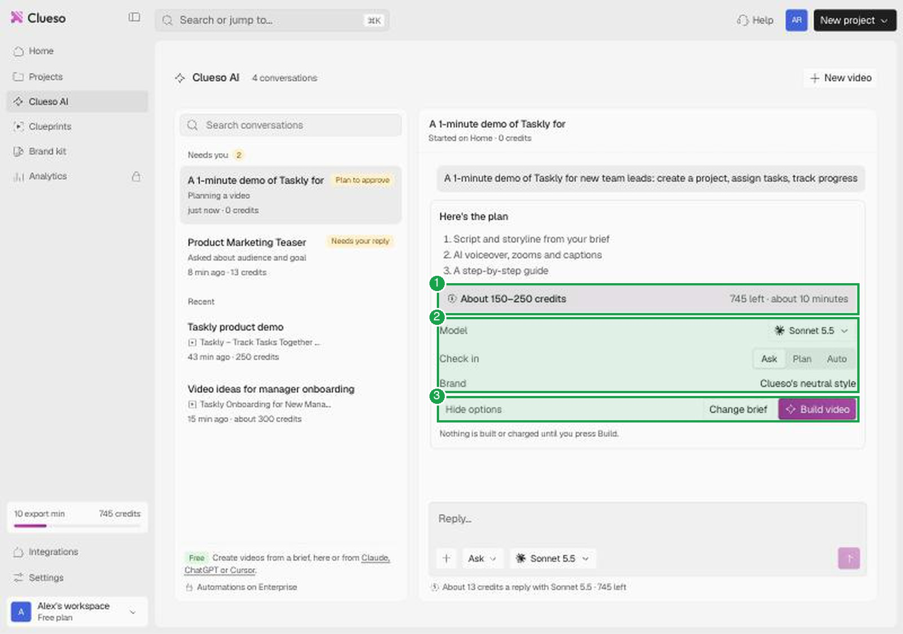
- 1Sending opens the conversation with a plan card: the cost range, credits left, about how long it takes, and that a guide is included.
WhyShape of AI: cost estimates. Clueso's own idea picker shows "about 150 credits"; a 57-second video used 250.
- 2Model, how often to check in, and brand sit in the card, using Clueso's own names. The brief is shown exactly as typed; nothing is added to it.
WhyProgressive disclosure (NN/g). User control and freedom (Nielsen #3).
- 3Nothing is built or charged until you press Build video. Change brief takes it back to Home.
WhyError prevention (Nielsen #5): a costly action needs an explicit go.
While it builds
A 9 min 37 s build showed only elapsed time and raw agent logs.
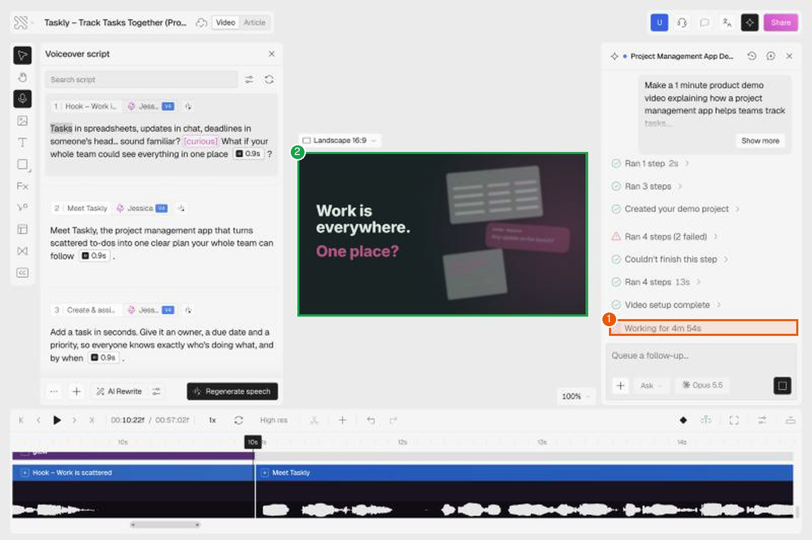
- 1No estimate and no end in sight Major
"Working for 4m 54s", then "Thinking for 8m 14s" when I stopped watching. There was no estimate and no per-scene progress.
BasisVisibility of system status
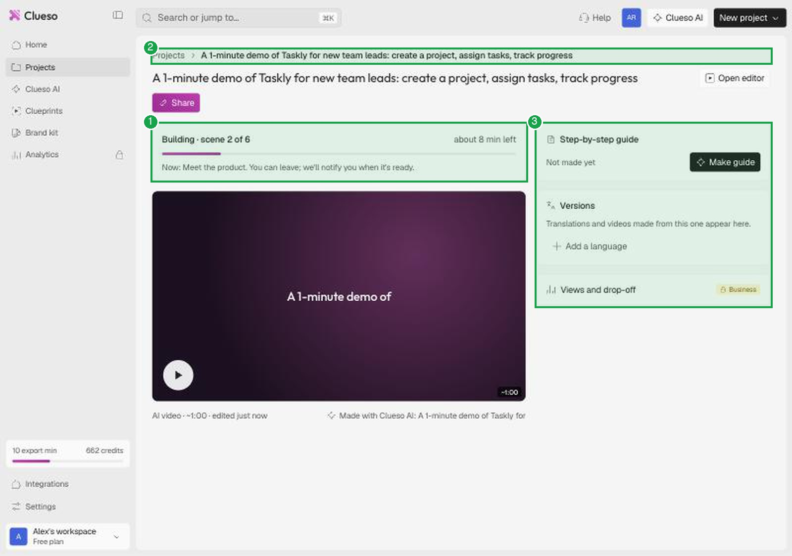
- 1Scene-by-scene progress with time left and "you can leave; we'll notify you".
WhyNielsen's "Slow AI": show progress, stage and estimate. NN/g response times: waits over 10 s need percent done.
- 2A breadcrumb shows where this project lives.
WhyDan Brown, principle of front doors: people arrive deep and need to know where they are.
- 3The project page leads with the video, then three things only: its guide, its versions and its analytics.
WhyPeak-end rule: the finished video is the peak, so it gets the stage. Dan Brown, objects: one home per object.
Projects list
Seven filters for two projects push New folder off screen, and copies made from a video float loose.
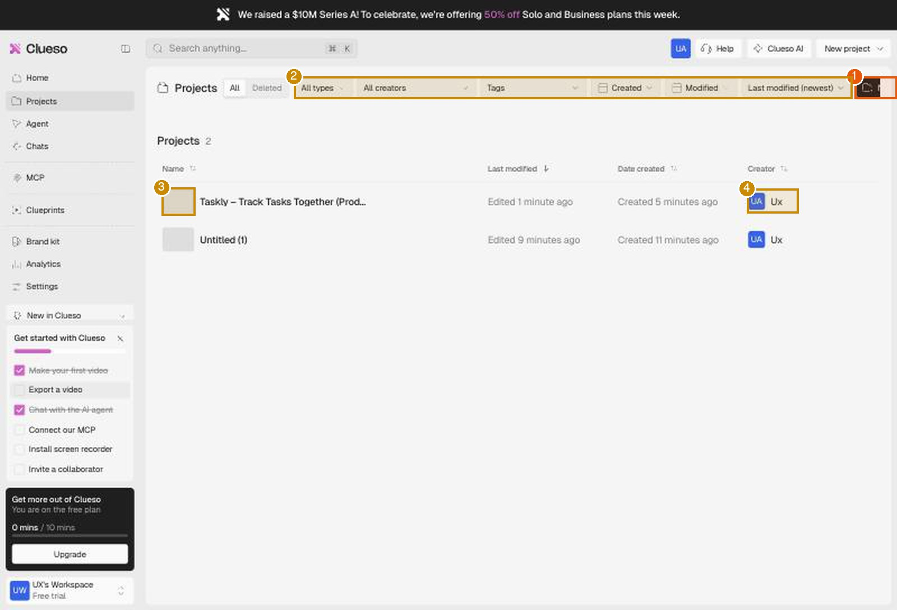
- 1The filter bar pushes the New folder button off screen Major
At 1294 px wide, the button is clipped to its icon.
BasisLayout
- 2Seven filters for two projects Minor
BasisMinimalism
- 3Blank thumbnails Minor
Command search shows thumbnails for the same projects, but this list doesn't.
BasisRecognition
Language versions and AI spin-offs are loose projects. The Spanish copy ("Taskly – Seguimiento de T...") sits as an unrelated project with no language badge. The two videos generated from the PDF are separate projects with new names. Basis: Brown: multiple classification
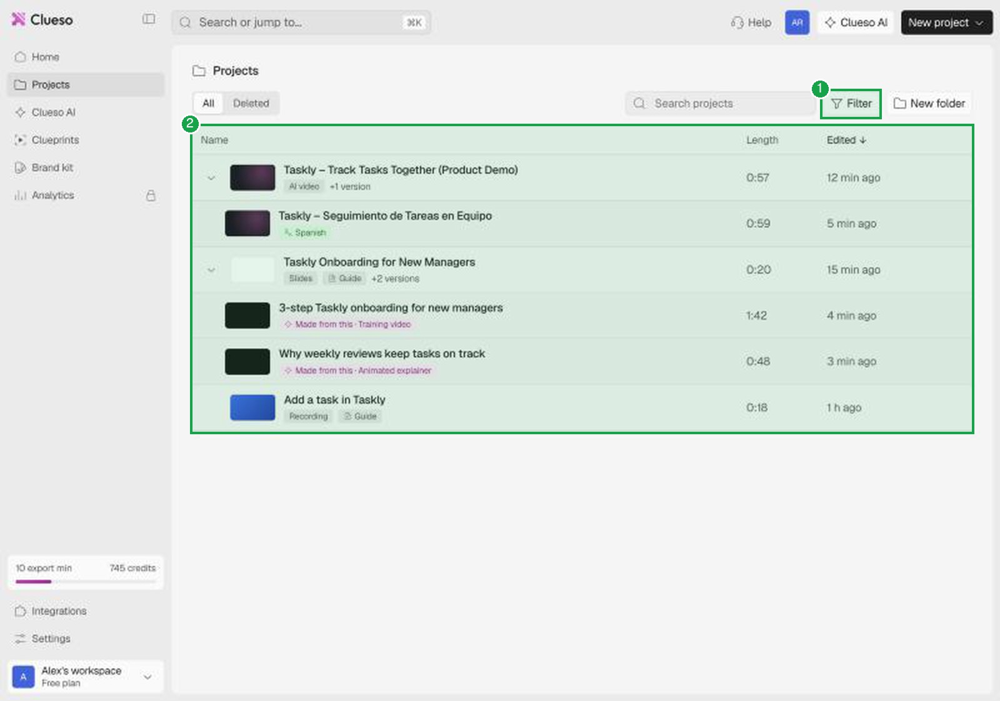
- 1One Filter button replaces seven filters, so New folder always fits.
WhyHick's law and progressive disclosure: filters appear when there is something to filter.
- 2Language versions and AI spin-offs sit under the video they came from, with badges. Columns show only what helps you pick.
WhyDan Brown, multiple classification and objects. Cognitive load: show information when it supports a decision.
Agent and Chats
On Free, a primary nav item opens a sales page whose only action is Book a demo, while the real assistant sits under Chats.
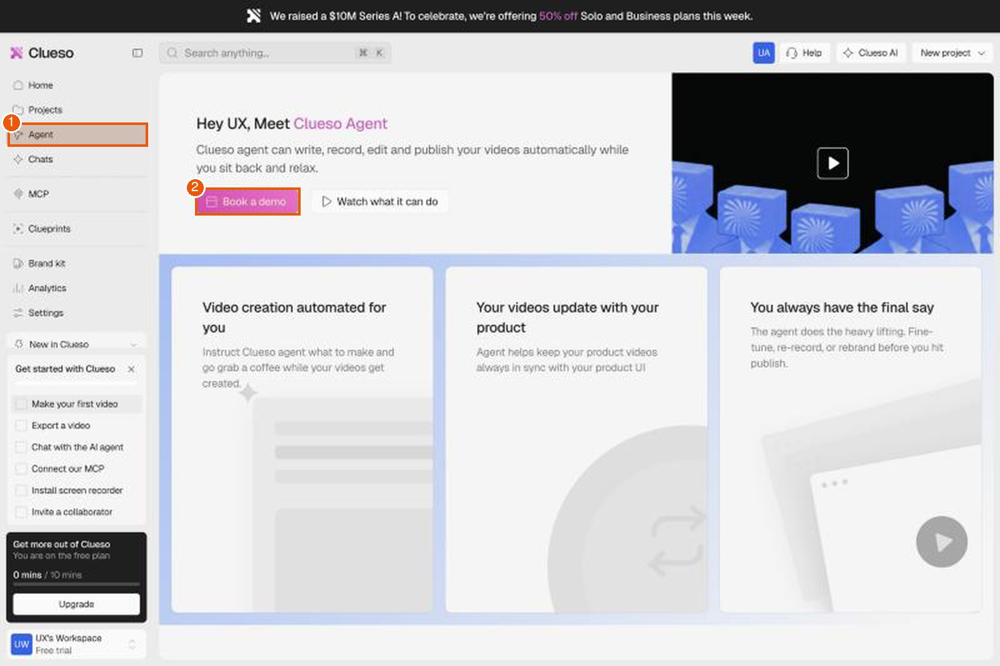
- 1A primary nav slot spent on a sales page Major
Agent opens a marketing page whose main action is Book a demo. The feature is Enterprise-only, but free users see it as the third item in the nav.
BasisMatch between the system and user goals
- 2Agent, Chats and Clueso AI blur together Major
The checklist asks the user to "Chat with the AI agent", which actually means Chats, not Agent.
BasisConsistency
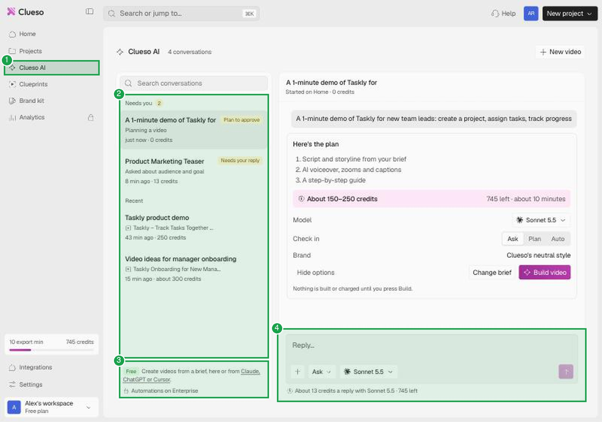
- 1Agent and Chats become one item, Clueso AI: one name for the one assistant.
WhyConsistency (Nielsen #4). Clueso shows the same assistant as Agent, Chats, Clueso AI and Director.
- 2The page lists your conversations, with what needs you first, each with its status and the credits it used.
WhyList and detail pattern (Gmail, Slack). NN/g: colour signals priority. Clueso chats already show per-message credits.
- 3What Free includes is stated once, and Enterprise agents are called Automations, listed once.
WhyClueso pricing: creating a video from chat and MCP are on Free; agents for auto-recording are Enterprise.
- 4Reply in place, with the model and the cost per reply shown before you send.
WhyShape of AI cost estimates. Observed: 13 credits for one reply.
Analytics
Analytics is a locked page with no preview of what you'd get.

- 1Primary nav item is a locked page Major
Analytics is Business and Enterprise only. The Video player settings page behaves the same way.
BasisVisibility of system status
- 2The upsell doesn't show what the user would get Minor
There is no preview of the dashboard.
BasisRecognition
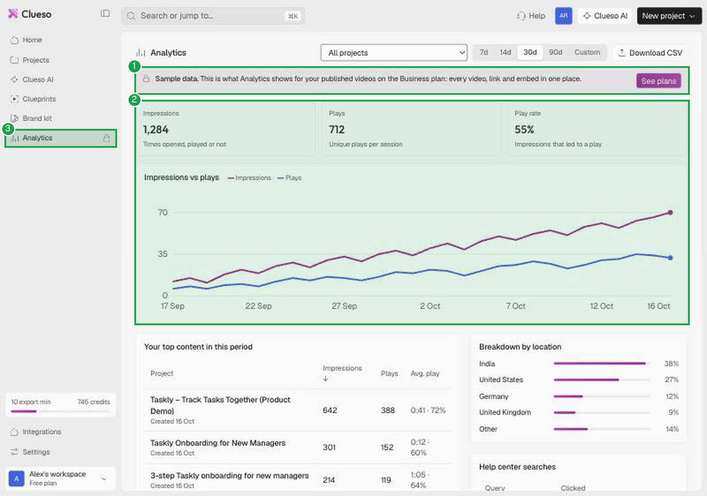
- 1On Free, a clearly labeled sample of the real dashboard, with one "See plans" button.
WhyShow value before asking for it. Clueso pricing: viewership analytics is Business and Enterprise.
- 2One workspace-wide dashboard across all videos, built from Clueso's help center description.
WhyClueso help center (Analytics): filters, impressions, plays, play rate, top content, locations.
- 3A lock on the sidebar item, so the paywall is never a surprise.
WhyDan Brown, principle of disclosure.
Clueprints
"Reusable video templates" collides with the editor's Templates, and the coined name is never explained.

- 1"Reusable video templates", while the editor also has Templates Major
Clueprints are full-video styles; editor Templates are intro and outro clips; Components are reusable groups. The help center needs a callout box to explain the difference.
BasisMatch with the real world
- 2The docs describe three tabs; the app shows two Minor
Personal, Workspace and Community in the help center; Workspace and Community in the app.
BasisHelp and documentation
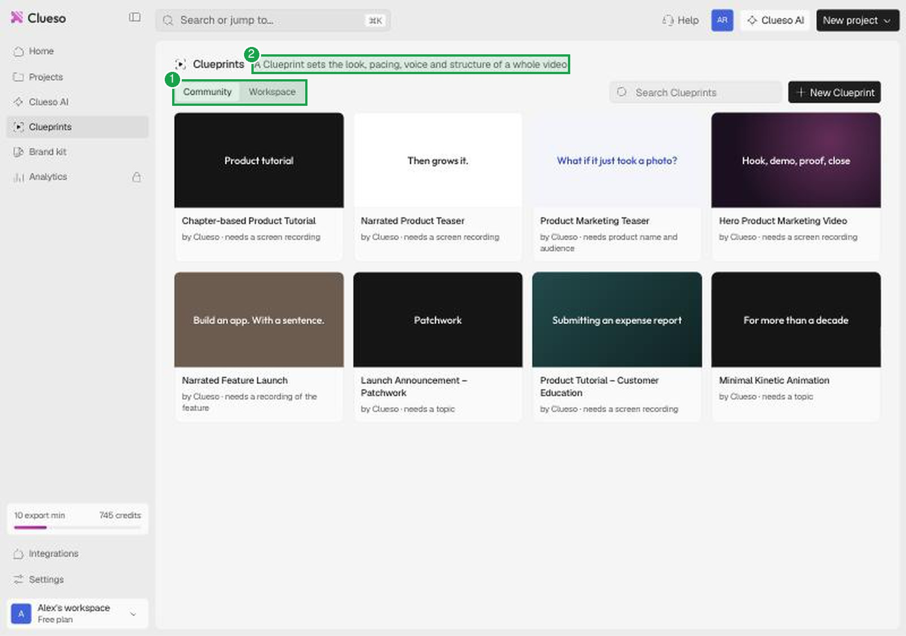
- 1Clueso's Community and Workspace tabs, search and New Clueprint stay, with nothing locked that Clueso leaves open.
WhyConsistency with the product (Jakob's law). Clueso: New clueprint is available on Free.
- 2The subtitle explains the coined name: a Clueprint sets the look, pacing, voice and structure of a whole video.
WhyNN/g information scent: explain a coined name once, inline, instead of a label that collides with Templates.
MCP and connections
MCP takes a top-level nav slot while GitHub and Bitbucket hide in Settings.

- 1"Watch the setup (1 min)" is a 2:15 video Minor
The label and the video length disagree.
BasisConsistency
- 2A developer integration at the top level Minor
MCP is in the main nav while the GitHub and Bitbucket connections live in Settings > Connections.
BasisGrouping by user task
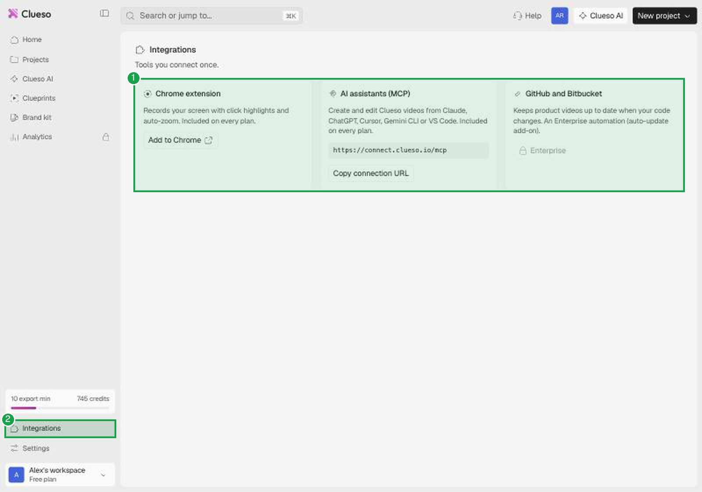
- 1Everything you connect once (Chrome extension, MCP, code connections) is on one page, each saying which plan includes it.
WhyGestalt proximity and Dan Brown's objects: set-once tools belong together.
- 2Integrations moves to the bottom of the sidebar, next to Settings.
WhyMicrosoft settings guidance: rarely changed items go last. Serial position effect: keep the ends for what matters.
Plan, usage and credits
Credits are shown with no explanation of what costs them, in a team table built for one person.
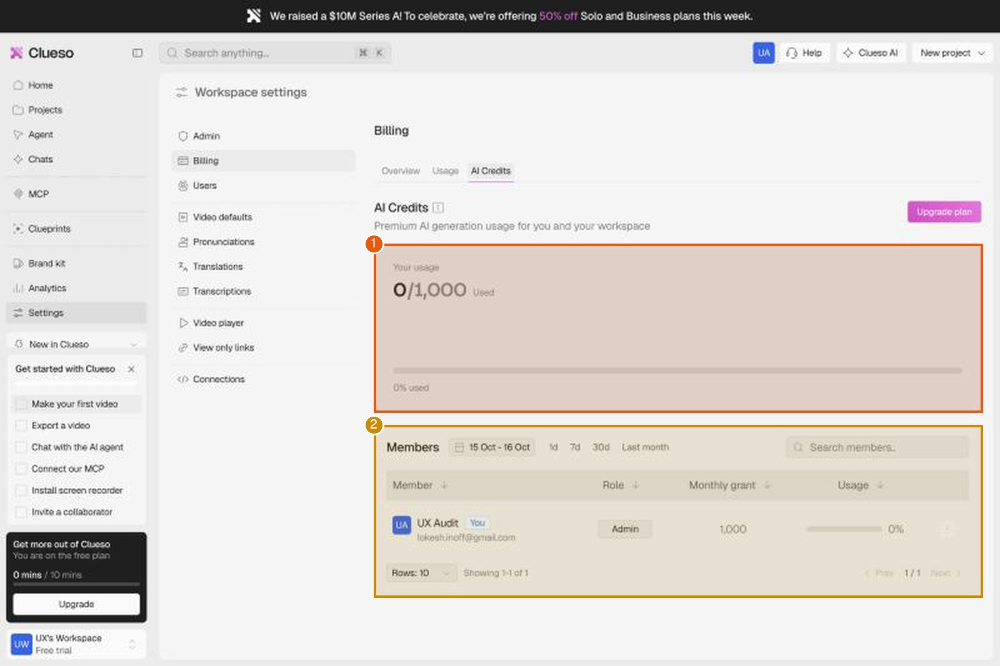
- 1No explanation of what costs credits Major
Prompts, edits and model choice all cost different amounts, and none of that is shown here.
BasisHelp and documentation
- 2Team table with sorting and pagination for one person Minor
Enterprise UI shown to a solo user.
BasisMinimalism
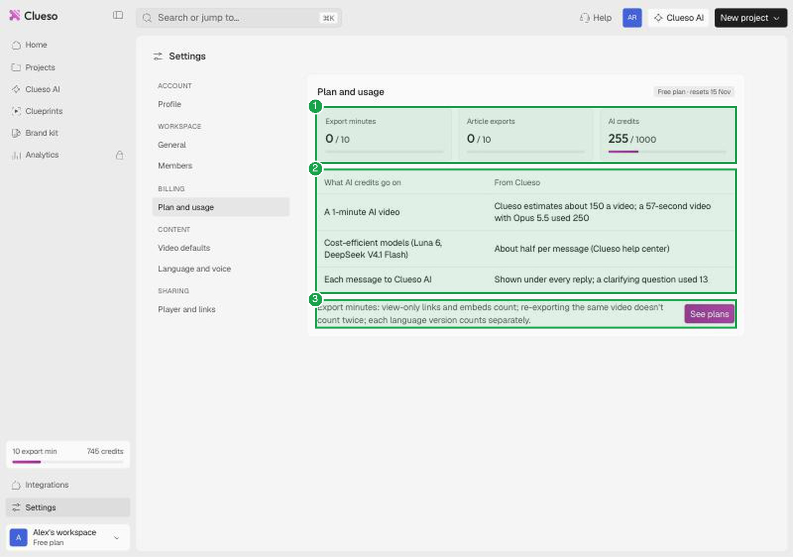
- 1Three meters that match the Free plan exactly: export minutes, article exports, AI credits.
WhyConsistency (Nielsen #4): Clueso's pricing table says 10 minutes, 10 articles and 1,000 credits.
- 2What credits go on, using only Clueso's own numbers.
WhyHelp and documentation (Nielsen #10). Observed: 250 credits for a 57-second video, 13 for one question.
- 3How export minutes count, in one sentence, next to See plans.
WhyVisibility of system status (Nielsen #1).
Sharing a video
Share opens on Export and says nothing about the 10 free minutes, the watermark or the 1080p cap.

- 1No limits shown before export Major
Nothing mentions the 10 export minutes a month, the watermark or the 1080p cap.
BasisVisibility of system status
- 2Share opens on Export Minor
Most people who click Share want a link.
BasisMatch with user expectations
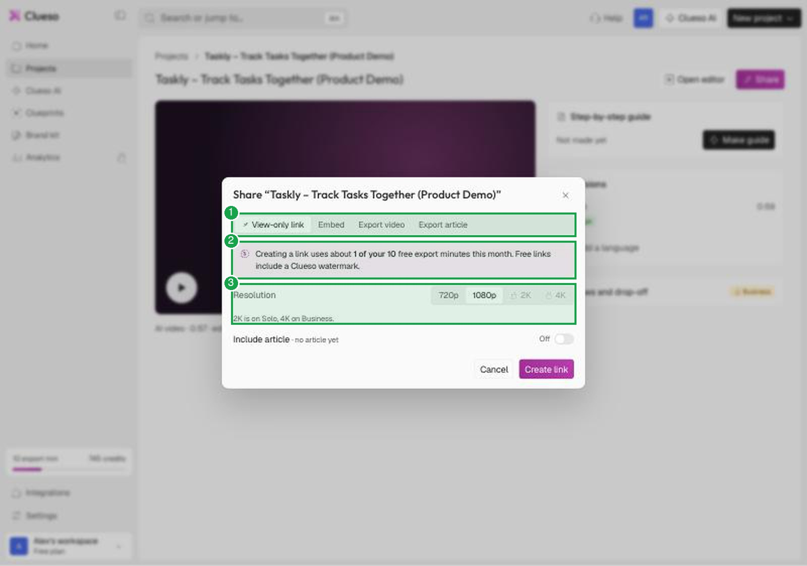
- 1Share opens on a view-only link, which is what most people want.
WhyJakob's law: Share means a link in the tools people already use.
- 2The cost is stated before you commit: about 1 of your 10 free export minutes, with a watermark on Free.
WhyVisibility of system status (Nielsen #1). Activation happens at this step, so hesitation here costs the most.
- 3Higher resolutions show their plan instead of failing later.
WhyError prevention (Nielsen #5).
Inviting a teammate
An email field, a role dropdown and Send, with nothing about seat limits or what roles mean.
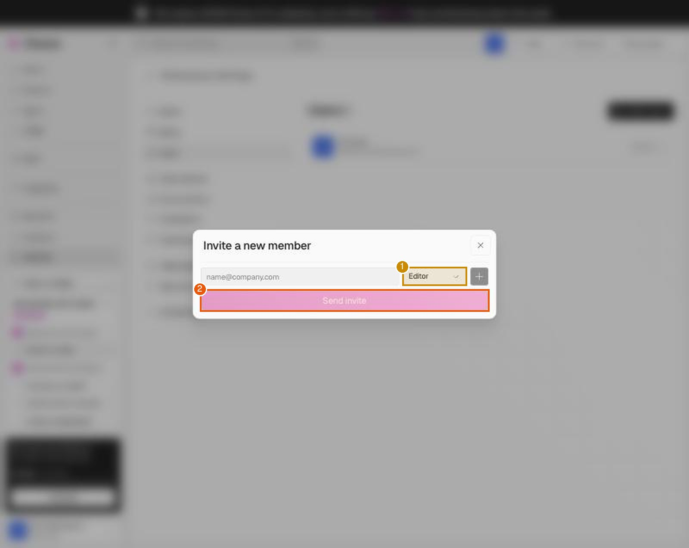
- 1Invite dialog hides seat limits and role meaning Major
An email field, an Editor dropdown and Send invite. Nothing says Free has 1 seat or explains Editor vs Reviewer.
BasisVisibility of system status
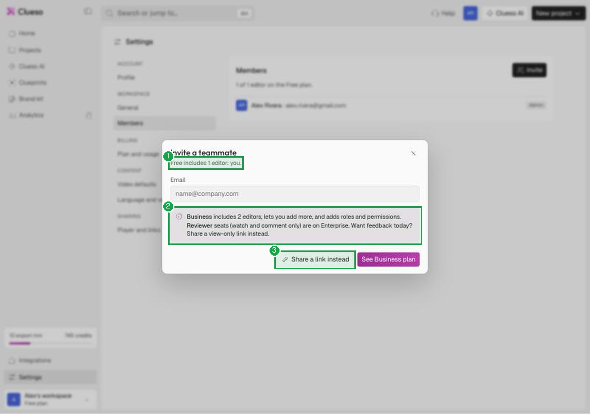
- 1The subtitle states the limit: Free includes 1 editor, you.
WhyVisibility of system status (Nielsen #1).
- 2Seats and roles per plan in one sentence: Business adds 2 editors and roles; reviewer seats are Enterprise.
WhyClueso pricing table. Help users recognize, not guess (Nielsen #6).
- 3"Share a link instead" meets the real need (feedback) without a seat.
WhyJobs to be done: the job is feedback, not membership.
Translating a video
"Customize translation rules" jumps to Settings and throws away the setup.

- 1"Customize translation rules" throws away the translator setup Major
It navigates to Settings > Translations; going back shows Home with the dialog closed and the selection lost.
BasisUser control and freedom
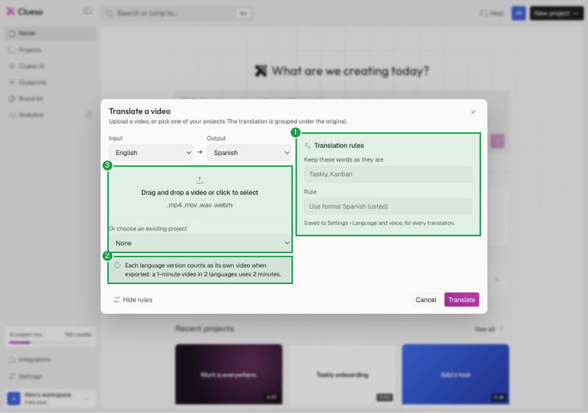
- 1Translation rules open inside the dialog, beside the setup, and save to Settings for every translation. Nothing is lost.
WhyUser control and freedom (Nielsen #3).
- 2One line says how translations count against export minutes.
WhyVisibility of system status (Nielsen #1).
- 3Upload a video or pick one of your projects, as Clueso's Translator allows.
WhyConsistency with Clueso: its Translator takes either.
Search results
Search pads every query with projects that don't match, and never says "no results".
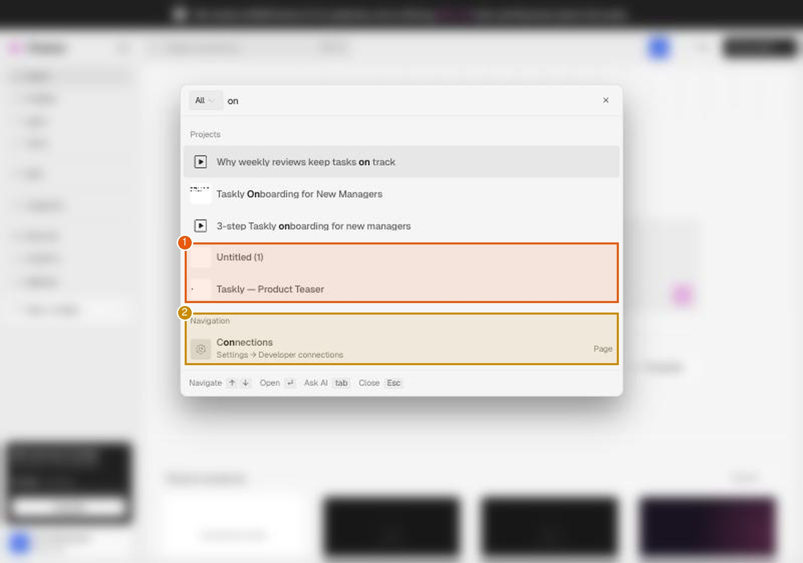
- 1Search pads results and never says "no results" Major
Searching "on" lists "Untitled (1)" and "Taskly — Product Teaser" (1) with nothing highlighted; "xyzq" still returns 5 projects and "brand" returns Home. Navigation (2) is always listed first, even when a project is the better match. The empty panel is blank (screenshot 90). The frame itself is good: fixed 680 × 480, input pinned, scopes with p; f; n; a; prefixes, Tab to ask AI.
BasisNielsen #6 recognition over recall; NN/g search results and no-results pages; Hick's law
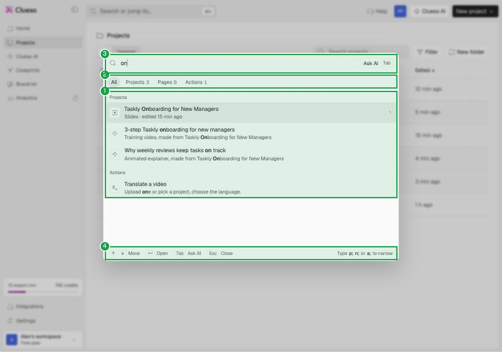
- 1The same query, "on", lists only real matches, ranked, with the match bolded and at most 5 per group.
WhyNN/g search results: relevance first, highlight the query. Hick's law caps each group.
- 2Scopes are visible tabs with result counts, so you can see where matches are before you click.
WhyVisibility of options; recognition over recall (Nielsen #6).
- 3Clueso's fixed 680 × 480 frame is kept: the input stays pinned while results scroll.
WhyConsistency and stability: the panel never resizes while you type.
- 4Every keyboard hint in the footer works, and Clueso's p; n; a; prefixes still narrow the search.
WhyFlexibility and efficiency of use (Nielsen #7). WAI-ARIA combobox pattern.
Search before you type
The panel is blank until you type.
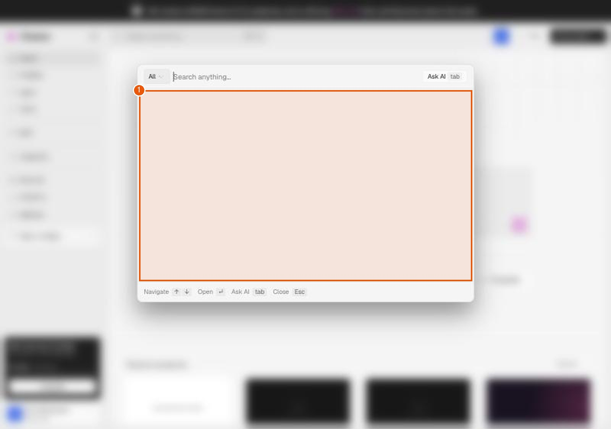
- 1The empty panel is blank Major
Opening search shows only the input and the footer. Nothing suggests what you can find or do.
BasisRecognition rather than recall
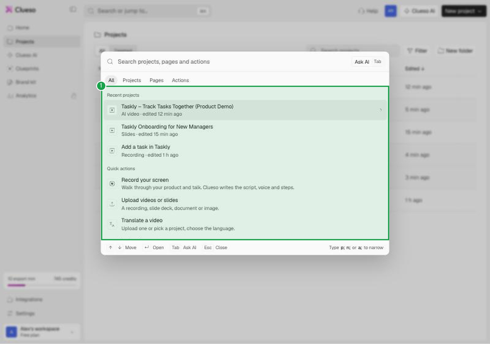
- 1Three recent projects and four quick actions fill the panel before you type.
WhyRecognition over recall (Nielsen #6): most searches are for something you just worked on.
Collapsed sidebar
Collapsed, the sidebar is a rail of similar icons with no labels.

- 1The collapsed sidebar is an unlabeled icon rail Major
Agent, Chats and Clueso AI use similar sparkle and pointer icons, and MCP's icon is unrecognizable. NN/g advises keeping text labels on vertical nav.
BasisNN/g vertical navigation
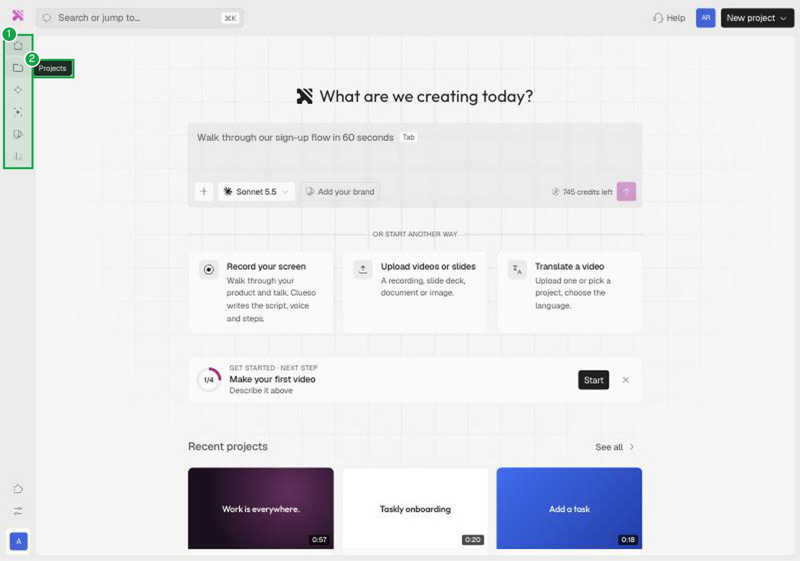
- 1Six distinct icons for six areas: Home, Projects, Clueso AI, Clueprints, Brand kit, Analytics.
WhyRecognition over recall. Agent and Chats are one item and MCP moved into Integrations, so no two icons mean nearly the same thing.
- 2Every icon shows its name on hover.
WhyNN/g vertical navigation: icons need text labels.
Principles and laws cited
What each "Basis" and "Why" line refers to.
- Nielsen's 10 usability heuristics
- Ten rules of thumb for interface design, from Jakob Nielsen (NN/g). Cited here by number: #1 visibility of system status, #2 match with the real world, #3 user control and freedom, #4 consistency, #5 error prevention, #6 recognition rather than recall, #7 flexibility and efficiency, #8 aesthetic and minimalist design, #10 help and documentation.
- Hick's law
- Decision time grows with the number and complexity of choices. Used to cap options at a decision point.
- Fogg behavior model
- Behavior happens when motivation, ability and a prompt meet. New users are most motivated right after sign-up, so that is when the first step must be easiest.
- Goal-gradient effect and endowed progress
- People speed up as they near a goal, and are more likely to finish when given a head start (Nunes and Drèze, 2006).
- Peak-end rule
- People judge an experience by its most intense moment and its end. The finished video is the peak, so it gets the stage.
- Jakob's law
- Users spend most of their time on other products and expect yours to work the same way.
- Progressive disclosure
- Show what most people need; reveal advanced options on request (NN/g).
- Cognitive load
- Every element on screen costs attention. Remove what doesn't support the current task.
- Microsoft HAX guidelines
- 18 guidelines for human-AI interaction. G1: make clear what the system can do. G2: make clear how well it can do it. G4: show contextually relevant information.
- Shape of AI and Nielsen's "Slow AI"
- Patterns for AI products: show cost before an action, and show progress, stage and an estimate during long AI work.
- Google PAIR
- People + AI guidebook. Mental models: set expectations about what the AI does before it does it.
- Dan Brown's 8 principles of information architecture
- Objects, choices, disclosure, exemplars, front doors, multiple classification, focused navigation, growth. Cited where content is grouped or found.
- WCAG 2.2
- Web accessibility guidelines. 1.3.1: structure conveyed in code (labels tied to inputs). 2.4.3: a logical focus order.
The redesign is a prototype that reuses Clueso's icons, typeface substitute and measured design tokens so the comparison is like for like. It is a concept for discussion, not Clueso's product. Pink in the prototype is deepened from Clueso's so white text passes WCAG AA contrast.